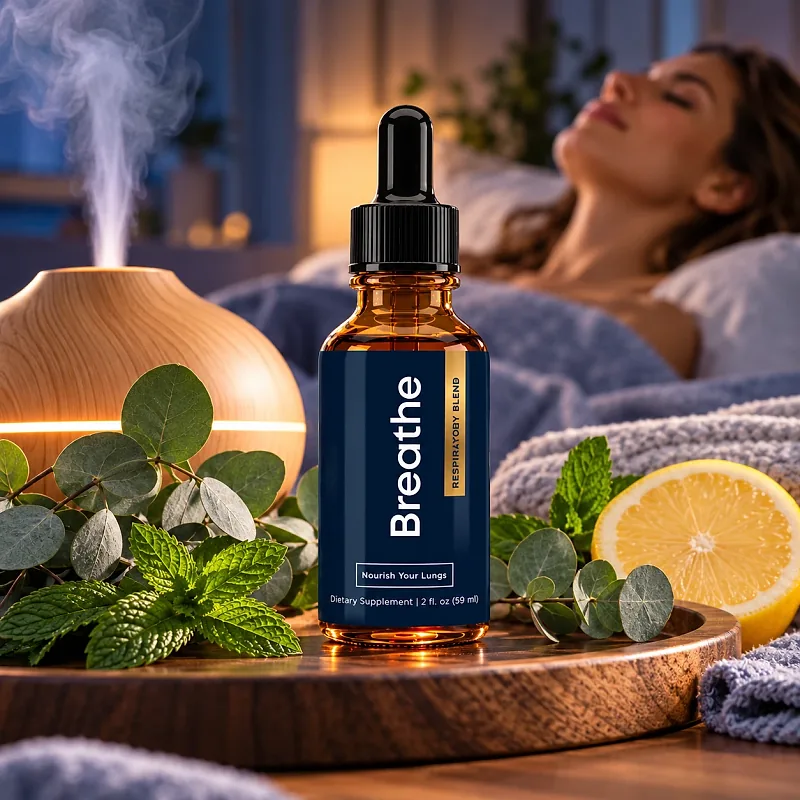
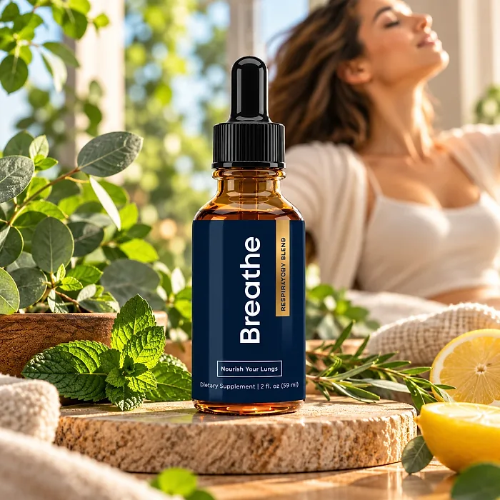

What Is Breathe And How Does It Work?
Breathe is a dietary supplement in liquid drops, presented on its label as a "Respiratory Blend" made to "Nourish Your Lungs." It is designed for adults who want to support clear, comfortable breathing, healthy airways, and daily energy with a simple herbal routine.
The official website names its main ingredients: Mullein, Thyme Leaf, Peppermint Oil and Leaf, Ginger, Lemon Peel, and Manuka Honey. These are traditional plants and foods long used in respiratory wellness, such as mullein and thyme, combined with peppermint, which gives a fresh, open feeling.
The idea behind the formula is to support the body's natural airway-cleaning process. According to the official website, mullein and thyme help the airways clear mucus, peppermint and ginger soothe the respiratory tract, lemon peel adds antioxidants, and manuka honey helps calm the throat.
Rather than acting as a quick fix, Breathe works as a daily herbal routine, and the customers quoted on the official website describe changes over weeks of regular use.
With consistent daily use, the customers quoted on the official website describe easier breathing, more energy, and the freedom to garden and exercise again, especially when the drops are combined with fresh air, not smoking, regular activity, and enough water.
In practical terms, Breathe is a 2 fl oz (59 ml) dropper bottle, sold as a one-month supply.
The sales presentation is led by a respiratory therapist named on the website, and it describes the formula as free of drugs, stimulants, and steroids. It is a dietary supplement, not a replacement for any inhaler or treatment prescribed by a doctor.
Breathe Ingredients
The official website describes the ingredients of Breathe one by one. These are the six it highlights, chosen to support clear airways and comfortable breathing:
Mullein: A plant used for centuries in Europe and Asia in traditional respiratory routines, known for soothing the airways.
Thyme Leaf (Thymus vulgaris): An herb with thymol and carvacrol, traditionally used as an expectorant that helps loosen mucus.
Peppermint Oil and Peppermint Leaf: Sources of menthol that give a cooling, open-airway feeling.
Ginger: A warming root used to soothe the throat and support the respiratory tract.
Lemon Peel: A source of antioxidant flavonoids and vitamin C.
Manuka Honey: A honey from New Zealand, known for calming the throat.
Together, these ingredients are designed to support easier breathing and healthy airways. The official website does not publish the Supplement Facts panel, the amount of each ingredient, or the other ingredients of the liquid, so the bottle label is the reference to check.
Breathe is designed for daily use, offering a natural, non-prescription approach to respiratory wellness.
Breathe Side Effects
Breathe is generally considered well tolerated and is intended for adults who want a gentle, herbal approach to respiratory wellness, with a few drops a day instead of complicated routines.
According to the official website, the formula contains no drugs, no stimulants, and no steroids, and there is no risk of dependence.
There are no widespread reports of serious side effects, but a few points deserve attention. Manuka honey is a honey, so it is not suitable for people allergic to honey or bee products; peppermint may bother people with reflux; and mullein and thyme can cause reactions in people allergic to plants of the same families. Most importantly, anyone who uses an inhaler or other respiratory medication should keep using it as prescribed and talk to their doctor before adding a supplement. Shortness of breath, chest pain, or a cough that does not go away needs a doctor. It is not intended to diagnose, treat, cure, or prevent any disease, and individual results may vary.
Pregnant or nursing women, people under 18, and anyone with a medical condition or taking prescription medication should consult a physician before using Breathe.
Breathe Dosage
Breathe is a liquid supplement taken with a dropper, so there are no capsules to swallow and nothing to mix.
The official website describes it as a routine that takes less than 10 seconds a day, and one of the customers quoted says she uses it twice a day, but the website does not publish the number of drops per serving. The directions printed on the bottle are the reference to follow.
Each bottle holds 2 fl oz (59 ml) and is sold as a 30-day supply. The official packages cover 30, 90, or 180 days, and the customers quoted describe changes after weeks or months of regular use.
A few habits help the routine: avoid smoke, keep the air at home clean and humid, drink enough water, and stay active within your limits. Gentle breathing exercises, such as slow breaths through the nose, and walking outdoors on days with good air quality are simple habits that fit well alongside a daily herbal routine.
As with any dietary supplement, do not exceed the recommended dose. Breathe works best as part of a routine that includes healthy habits and regular check-ups with your doctor.
Breathe – Refund Policy
Breathe is sold with a money-back guarantee, but the official website describes its length in different ways. The order section shows a 180-day guarantee, and the returns page opens with "6 months or 180 days after we ship your order", while the same page and the contact page later speak of a 3-month period. Counting on the shorter period is the safest choice.
According to the returns page, you must email customer support with "Refund Request" in the subject line and wait for confirmation from an agent before sending anything back. Then send all the bottles, empty or unopened, at your own cost, and email the tracking number. Include a note with your full name, order number, and email.
How to request a refund: Email support, wait for confirmation, then send the bottles to 285 Northeast Ave, Tallmadge, OH 44278. Once the return is registered, you receive a full refund and an email confirming it.
Customer Support Contact Information: support@herbalteatherapy.com or +1 (330) 521-3590, from 10 AM to 7 PM EST on weekdays and 2 PM to 5 PM EST on weekends, as listed on the contact page.
Refund Processing Time: According to the policy, the refund usually takes 5 to 10 days to appear on your statement.
Because the guarantee periods do not match, it is worth confirming the terms with support before ordering.
Breathe Customer Reviews
-
Nathaniel ColeVerified Purchase – 6 Bottles
“I guess it’s been about two and a half months now. And I do notice a difference in how I feel. Generally with my breathing and energy level. It’s definitely improved things for me, and I’m going to continue using it.”
-
Amelia CollinsVerified Purchase – 6 Bottles
“Since I’ve started this routine twice a day, it’s amazing. It’s helped me so much. And now I can go out and garden no matter what time of year it is.”
-
Olivia ReedVerified Purchase – 6 Bottles
“Within a few days I felt the difference. It felt like an elephant left my chest. I feel less tight chested and can now exercise without constantly taking long breaks.”
Breathe – Where To Buy
Breathe is sold through its official website, so if you decide to try it, it's important to be careful about where you purchase it. The official website is the only sales channel the manufacturer lists, and it does not point to marketplaces such as Amazon, eBay, or Walmart.
Listings on third-party platforms may look similar but cannot be verified as authentic, raising concerns about safety, quality, and ingredient freshness. Products purchased outside the official source may not be covered by the money-back guarantee.
For this reason, most customers recommend purchasing Breathe only through the official website. Buying directly from the official source ensures you receive the authentic original product, with access to customer support and the full guarantee. According to the official website, every purchase is a one-time order, with no automatic renewals, hidden fees, or surprise charges.
To avoid counterfeit batches and ensure maximum quality, always verify that you are ordering from the official Breathe website before completing your purchase.
To ensure you’re getting the authentic product, most users choose to visit the official website.
Is Breathe A Scam?
Going by what the official website shows, Breathe appears to be a real product. It is sold through an established retailer (BuyGoods), names its ingredients, publishes a return address in Tallmadge, Ohio, and lists a support email and phone line.
There are serious points of criticism, though. The sales presentation is written as a medical story: it criticizes inhalers, steroids, and other medicines, and promises to clear "years of mucus" and end coughing "for good". A dietary supplement cannot make those promises, and no one should stop a prescribed respiratory treatment because of a supplement. The website also does not publish the label, the amounts, or the directions, and the guarantee appears as 180 days in one place and 3 months in another. The contact email belongs to a different brand name, herbalteatherapy.com.
On the positive side, the ingredients it names, such as mullein, thyme, and peppermint, are traditional and widely used in respiratory wellness products.
Customers quoted on the official website describe easier breathing, more energy, and more freedom in daily activities. Expectations should stay realistic: results vary from person to person, and breathing problems need a doctor.
Breathe is backed by a money-back guarantee, and the official website says all orders are one-time purchases. The return steps and the address are published on the returns page.
For adults who want a simple daily herbal routine to support comfortable breathing and healthy airways, Breathe is worth considering — ideally bought from the official website.
For those who want to verify product details or check current availability, the official Breathe website remains the safest option.
